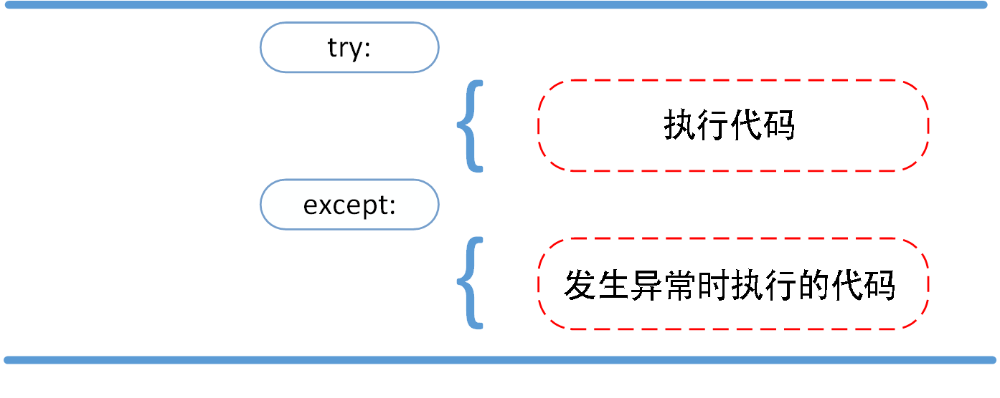
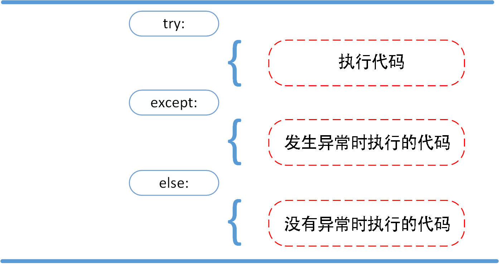
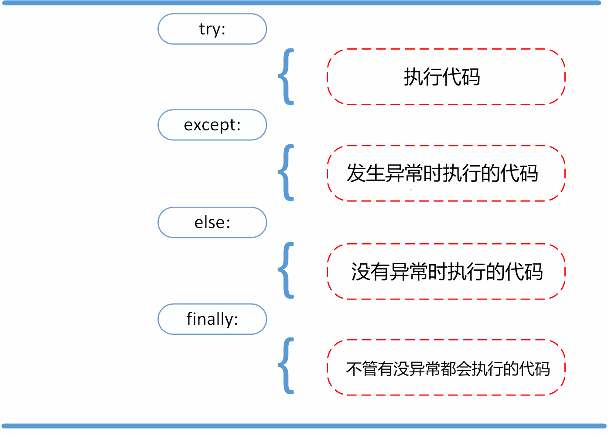
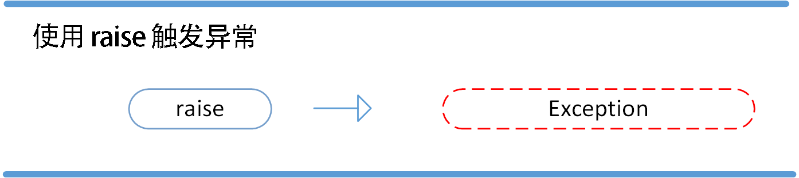
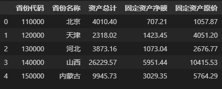
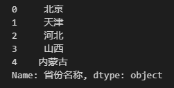
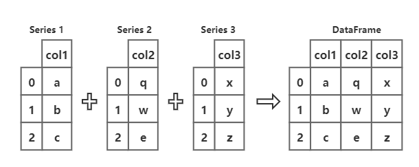
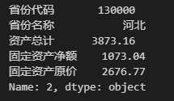

CONTENT OUTLINE
关于Python学习，每遇未知点即记录！
〇、目录
- 常用内置函数
一 数据结构
二 语句类问题
1、表达式
1.1 yield表达式
yield 表达式在定义 generator 函数或是 asynchronous generator 的时候才会用到。 因此只能在函数定义的内部使用yield表达式。 在一个函数体内使用 yield 表达式会使这个函数变成一个生成器，并且在一个 async def 定义的函数体内使用 yield 表达式会让协程函数变成异步的生成器。 比如说:
1 | def gen(): # defines a generator function |
由于它们会对外层作用域造成附带影响，yield 表达式不被允许作为用于实现推导式和生成器表达式的隐式定义作用域的一部分。
当一个生成器函数被调用的时候，它返回一个迭代器，称为生成器。然后这个生成器来控制生成器函数的执行。当这个生成器的某一个方法被调用的时候，生成器函数开始执行。这时会一直执行到第一个 yield 表达式，在此执行再次被挂起，给生成器的调用者返回 expression_list 的值。挂起后，我们说所有局部状态都被保留下来，包括局部变量的当前绑定，指令指针，内部求值栈和任何异常处理的状态。通过调用生成器的某一个方法，生成器函数继续执行。此时函数的运行就和 yield 表达式只是一个外部函数调用的情况完全一致。恢复后 yield 表达式的值取决于调用的哪个方法来恢复执行。 如果用的是 __next__() (通常通过语言内置的 for 或是 next() 来调用) 那么结果就是 None. 否则，如果用 send(), 那么结果就是传递给send方法的值。
所有这些使生成器函数与协程非常相似；它们 yield 多次，它们具有多个入口点，并且它们的执行可以被挂起。唯一的区别是生成器函数不能控制在它在 yield 后交给哪里继续执行；控制权总是转移到生成器的调用者。
在 try 结构中的任何位置都允许yield表达式。如果生成器在(因为引用计数到零或是因为被垃圾回收)销毁之前没有恢复执行，将调用生成器-迭代器的 close() 方法. close 方法允许任何挂起的 finally 子句执行。
当使用 yield from <expr> 时，所提供的表达式必须是一个可迭代对象。 迭代该可迭代对象所产生的值会被直接传递给当前生成器方法的调用者。 任何通过 send() 传入的值以及任何通过 throw() 传入的异常如果有适当的方法则会被传给下层迭代器。 如果不是这种情况，那么 send() 将引发 AttributeError 或 TypeError，而 throw() 将立即引发所转入的异常。
当下层迭代器完成时，被引发的 StopIteration 实例的 value 属性会成为 yield 表达式的值。 它可以在引发 StopIteration 时被显式地设置，也可以在子迭代器是一个生成器时自动地设置（通过从子生成器返回一个值）。
2、关键字
2.1 with
原文 | 或见本文第七节【异常处理】
对于系统资源如文件、数据库连接、socket 而言，应用程序打开这些资源并执行完业务逻辑之后，必须做的一件事就是要关闭（释放）该资源。
比如 Python 程序打开一个文件，往文件中写内容，写完之后，就要关闭该文件，如果不关闭会出现什么情况呢？极端情况下会出现 Too many open files 的错误，因为系统允许你打开的最大文件数量是有限的。同样，对于数据库，如果连接数过多而没有及时关闭的话，就可能会出现 Can not connect to MySQL server Too many connections，因为数据库连接是一种非常昂贵的资源，不可能无限制的被创建。
我们所熟知的try except finally 可以解决上述问题，但这样的结构一多会导致整体代码结构 很臃肿繁琐，不易读、不美观。所以用with…as…语句对其进行简化。
1 | #open 方法的返回值赋值给变量 f |
3、特殊语法
3.1 f-string
这是Python3.6版本开始引入的一种字符串格式化的语法，称为f-string。它允许在字符串中使用花括号{}来引用Python中的变量或表达式，并将它们的值插入到字符串中。这种语法简单易懂，使得字符串格式化变得更加简洁和高效。
f-string以f或F开头，后面跟着一个带有花括号的表达式，花括号中可以放置要引用的变量或表达式。例如：
1 | name = "Tom" |
输出结果：
1 | My name is Tom, and I am 18 years old. |
3.2 _
目前常见的用法有五种：
- _用于临时变量
- var_用于解决命名冲突问题
- _var用于保护变量
- __var用于私有变量
- __ var__用于魔术方法
3.2.1 _用于临时变量
单下划线一般用于表示临时变量，在REPL、for循环和元组拆包等场景中比较常见。
1 REPL
单下划线在REPL中关联的是上一次计算的非None结果。
1 | > 1+1 |
1+1，结果为2，赋值给_ ；而赋值表达式a=2+2a为4，但整个表达式结果为None，故不会关联到_。这有点类似日常大家使用的计算器中的ANS按键，直接保存了上次的计算结果。
2 for循环中的_
for循环中_ 作为临时变量用。下划线来指代没什么意义的变量。例如在如下函数中，当我们只关心函数执行次数，而不关心具体次序的情况下，可以使用_作为参数。
1 | nums = 13 |
3 元组拆包中的_
第三个用法是元组拆包，赋值的时候可以用_来表示略过的内容。如下代码忽略北京市人口数，只取得名字和区号。
1 | > city,_,code = ('Beijing',21536000,'010') |
如果需要略过的内容多于一个的话，可以使用*开头的参数，表示忽略多个内容。如下代码忽略面积和人口数，只取得名字和区号
1 | city,*_,code = ('Beijing',21536000,16410.54,'010') |
4 国际化函数
在一些国际化编程中，_常用来表示翻译函数名。例如gettext包使用时：
1 | import gettext |
依据设定的字典文件，其返回相应的汉字“你好世界”。
5 大数字表示形式
_也可用于数字的分割，这在数字比较长的时候常用。
1 | > a = 9_999_999_999 |
a的值自动忽略了下划线。这样用_分割数字，有利于便捷读取比较大的数。
3.2.2 var_用于解决命名冲突问题
变量后面加一个下划线。主要用于解决命名冲突问题，元编程中遇到Python保留的关键字时，需要临时创建一个变量的副本时，都可以使用这种机制。
1 | def type_obj_class(name,class_): |
以上代码中出现的class是Python的保留关键字，直接使用会报错，使用下划线后缀的方式解决了这个问题。
3.2.3 _var用于保护变量
3.2.4 __var用于私有变量
3.2.5 var用于魔术方法
三 常用内置函数
1、class range(stop)
range 类型表示不可变的数字序列，通常用于在 for 循环中循环指定的次数。
虽然被称为函数，但
range实际上是一个不可变的序列类型，参见在 range 对象 与 序列类型 — list, tuple, range 中的文档说明。
class range(start, stop[, step]) 【注意：区间为前闭后开】
range 构造器的参数必须为整数（可以是内置的 int 或任何实现了 __index__ 特殊方法的对象）。 如果省略 step 参数，其默认值为 1。 如果省略 start 参数，其默认值为 0，如果 step 为零则会引发 ValueError。
1 | list(range(10)) |
2、next()
next(iterator[, default])
通过调用 iterator 的 __next__() 方法获取下一个元素。如果迭代器耗尽，则返回给定的 default，如果没有默认值则触发 StopIteration。
next() 返回迭代器的下一个项目。
next() 函数要和生成迭代器的 iter() 函数一起使用。
3、iter()
iter(object[, sentinel])
返回一个 iterator 对象。根据是否存在第二个实参，第一个实参的解释是非常不同的。如果没有第二个实参，object 必须是支持迭代协议（有 __iter__() 方法）的集合对象，或必须支持序列协议（有 __getitem__() 方法，且数字参数从 0 开始）。如果它不支持这些协议，会触发 TypeError。如果有第二个实参 sentinel，那么 object 必须是可调用的对象。这种情况下生成的迭代器，每次迭代调用它的 __next__() 方法时都会不带实参地调用 object；如果返回的结果是 sentinel 则触发 StopIteration，否则返回调用结果。
适合 iter() 的第二种形式的应用之一是构建块读取器。 例如，从二进制数据库文件中读取固定宽度的块，直至到达文件的末尾:
1 | from functools import partial |
4、len()
len(s)
返回对象的长度（元素个数）。实参可以是序列（如 string、bytes、tuple、list 或 range 等）或集合（如 dictionary、set 或 frozen set 等）。
5、zip()
zip(*iterables)
创建一个聚合了来自每个可迭代对象中的元素的迭代器。
返回一个元组的迭代器，其中的第 i 个元组包含来自每个参数序列或可迭代对象的第 i 个元素。 当所输入可迭代对象中最短的一个被耗尽时，迭代器将停止迭代。 当只有一个可迭代对象参数时，它将返回一个单元组的迭代器。 不带参数时，它将返回一个空迭代器。
1 | a = [1,2,3] |
四 成员函数【待确定名称】
1、特殊成员函数
1.1 flatten()
flatten()是对多维数据的降维函数。默认缺省参数为0，也就是说flatten()和flatte(0)效果一样。
flatten(dim)：从第dim个维度开始展开，将后面的维度转化为一维。也就是说，只保留dim之前的维度，其他维度的数据全都挤在dim这一维。比如一个数据的维度是(S0,S1,S2.........,Sn)， flatten(m)后的数据为 (S0，S1，S2，...，Sm-2，Sm-1，Sm*Sm+1*Sm+2*...*Sn)
比如，随机定义一个维度为（2，3，4）的数据a
1 | import torch |
flatten()和flatten(0)效果一样，a这个数据从0维展开，即（2 ∗ 3 ∗ 4 ），维度就是(24)
1 | b = a.flatten() |
同理，a从1维展开flatten(1)，就是( 2 , 3 ∗ 4 )，也就是（2，12）
五 模块
1、random模块
在Python中随机数生成主要有两种途径：
- 利用
random模块生成- 利用
numpy库中random函数生成scipy.stats模块也可以生成随机数和特定分布的随机数在我们日常使用中，如果是为了得到随机的单个数，多考虑random模块；如果是为了得到随机小数或者整数的矩阵，就多考虑numpy中的random函数
1.1 从指定序列中生成随机数
④ random.shuffle(seq)
功能： 将序列seq中的元素随机排序。
1 | import random |
2、Matplotlib
Python –Matplotlib详解 【较入门】
1 | #安装 |
2.1 入门基础
2.1.1 绘制散点图
如果输入的是两个列表，一个表示 x 轴的值，一个表示 y 轴的值，那么就可以在直角坐标系中划出很多个点，然后将这些点用指定的线段连接起来就得到了散点图。
可以使用 plt.plot(x, y, 风格) 来达到目的，其中的风格有很多种，如点状、小叉、圆圈、不同颜色等。
1 | import matplotlib.pyplot as plt |
python绘制子图技巧——plt.subplot和plt.subplots、及坐标轴修改
绘制子图
https://blog.csdn.net/m0_67392010/article/details/125241307
六 输入输出
1、文件写入
1 | fileName='notebook.txt' |
w:写入模式，每次会清空之前的内容，重新写入
r:只读模式
a:附件模式，写入人模式，不清空之前的内容，直接在文件结尾附加
r+:读+写，但不创建文件
七 错误与异常
语法错误：Python 的语法错误或者称之为解析错，是初学者经常碰到的，如下实例
1 | while True print('Hello world') |
这个例子中，函数 print() 被检查到有错误，是它前面缺少了一个冒号 : 。
语法分析器指出了出错的一行，并且在最先找到的错误的位置标记了一个小小的箭头。
异常：即便 Python 程序的语法是正确的，在运行它的时候，也有可能发生错误。运行期检测到的错误被称为异常。大多数的异常都不会被程序处理，都以错误信息的形式展现在这里。
异常以不同的类型出现，这些类型都作为信息的一部分打印出来：例子中的类型有 ZeroDivisionError，NameError 和 TypeError。
错误信息的前面部分显示了异常发生的上下文，并以调用栈的形式显示具体信息。
1、异常处理：try
1.1 try/except
异常捕捉可以使用 try/except 语句。

以下例子中，让用户输入一个合法的整数，但是允许用户中断这个程序（使用 Control-C 或者操作系统提供的方法）。用户中断的信息会引发一个 KeyboardInterrupt 异常。
1 | while True: |
try 语句按照如下方式工作；
- 首先，执行 try 子句（在关键字 try 和关键字 except 之间的语句）。
- 如果没有异常发生，忽略 except 子句，try 子句执行后结束。
- 如果在执行 try 子句的过程中发生了异常，那么 try 子句余下的部分将被忽略。如果异常的类型和 except 之后的名称相符，那么对应的 except 子句将被执行。
- 如果一个异常没有与任何的 except 匹配，那么这个异常将会传递给上层的 try 中。
一个 try 语句可能包含多个except子句，分别来处理不同的特定的异常。最多只有一个分支会被执行。
处理程序将只针对对应的 try 子句中的异常进行处理，而不是其他的 try 的处理程序中的异常。
一个except子句可以同时处理多个异常，这些异常将被放在一个括号里成为一个元组，例如:
1 | except (RuntimeError, TypeError, NameError): |
最后一个except子句可以忽略异常的名称，它将被当作通配符使用。你可以使用这种方法打印一个错误信息，然后再次把异常抛出。
1 | import sys |
1.2 try/except…else
try/except 语句还有一个可选的 else 子句，如果使用这个子句，那么必须放在所有的 except 子句之后。
else 子句将在 try 子句没有发生任何异常的时候执行。

以下实例在 try 语句中判断文件是否可以打开，如果打开文件时正常的没有发生异常则执行 else 部分的语句，读取文件内容：
1 | for arg in sys.argv[1:]: |
使用 else 子句比把所有的语句都放在 try 子句里面要好，这样可以避免一些意想不到，而 except 又无法捕获的异常。
异常处理并不仅仅处理那些直接发生在 try 子句中的异常，而且还能处理子句中调用的函数（甚至间接调用的函数）里抛出的异常。例如:
1 | def this_fails(): |
1.3 try-finally 语句
try-finally 语句无论是否发生异常都将执行最后的代码。

1 | try: |
2、抛出异常
Python 使用 raise 语句抛出一个指定的异常。
raise语法格式如下：raise [Exception [, args [, traceback]]]

以下实例如果 x 大于 5 就触发异常:
1 | x = 10 |
raise 唯一的一个参数指定了要被抛出的异常。它必须是一个异常的实例或者是异常的类（也就是 Exception 的子类）。
如果你只想知道这是否抛出了一个异常，并不想去处理它，那么一个简单的 raise 语句就可以再次把它抛出。
1 | try: |
3、用户自定义异常
你可以通过创建一个新的异常类来拥有自己的异常。异常类继承自 Exception 类，可以直接继承，或者间接继承，例如:
1 | class MyError(Exception): |
在这个例子中，类 Exception 默认的 init() 被覆盖。
当创建一个模块有可能抛出多种不同的异常时，一种通常的做法是为这个包建立一个基础异常类，然后基于这个基础类为不同的错误情况创建不同的子类:
1 | class Error(Exception): |
大多数的异常的名字都以”Error”结尾，就跟标准的异常命名一样。
4、定义清理行为
5、预定义的清理行为
6、Python assert 断言
Python assert（断言）用于判断一个表达式，在表达式条件为 false 的时候触发异常。
断言可以在条件不满足程序运行的情况下直接返回错误，而不必等待程序运行后出现崩溃的情况，例如我们的代码只能在 Linux 系统下运行，可以先判断当前系统是否符合条件。
1 | # 语法格式如下： |
以下为 assert 使用实例：
1 | assert True # 条件为 true 正常执行 |
以下实例判断当前系统是否为 Linux，如果不满足条件则直接触发异常，不必执行接下来的代码：
1 | import sys |
7、Python with 关键字
Python 中的 with 语句用于异常处理，封装了 try…except…finally 编码范式，提高了易用性。
with 语句使代码更清晰、更具可读性， 它简化了文件流等公共资源的管理。
在处理文件对象时使用 with 关键字是一种很好的做法。
实例：不使用 with，也不使用 try…except…finally
1 | file = open('./test_runoob.txt', 'w') |
使用 with 关键字：
1 | with open('./test_runoob.txt', 'w') as file: |
使用 with 关键字系统会自动调用 f.close() 方法， with 的作用等效于 try/finally 语句是一样的。
我们可以在执行 with 关键字后检验文件是否关闭：
1 | with open('./test_runoob.txt') as f: |
with 语句实现原理建立在上下文管理器之上。
上下文管理器是一个实现 enter 和 exit 方法的类。
使用 with 语句确保在嵌套块的末尾调用 exit 方法。
这个概念类似于 try…finally 块的使用。
1 | with open('./test_runoob.txt', 'w') as my_file: |
以上实例将 hello world! 写到 ./test_runoob.txt 文件上。
在文件对象中定义了 enter 和 exit 方法，即文件对象也实现了上下文管理器，首先调用 enter 方法，然后执行 with 语句中的代码，最后调用 exit 方法。 即使出现错误，也会调用 exit 方法，也就是会关闭文件流。
八 Python Pandas包
1 引言
如果我们需要通过 Python 程序进行一些数学运算，标准库中的 math 库就可以胜任，但是当我们面对的是一个包含多种数据类型的大规模数据集时，就需要用更多的数据结构和数据操作方法来处理该数据集，此时 Python 中的第三方库 Pandas 的实用价值就凸显出来了。
它的功能非常强大，不仅可以用于数据处理，还可以对数据进行统计分析和可视化。在数据处理方面，Pandas 提供了许多实用的功能，比如可以使用 Pandas 从 csv、Excel、数据库等多种数据源中读取数据，除此以外，Pandas 的数据处理非常完备，下面列举了常用的几个功能：
- 合并多个文件的数据，或者将数据拆分为多个独立文件
- 建立高效的索引，灵活地查询、筛选数据
- 对数据进行去重、填充、删除、替换、转换等操作
实际上 Pandas 和熊猫无关，它来自于计量经济学中的术语“面板数据”（Panel data）。
Pandas 是由 Wes McKinney 在 2008 年开发的，McKinney 当时是一家纽约金融服务机构的金融分析师 ，他在自己的工作中遇到了一些数据操作问题，当时 Python 中已经有了 Numpy 这样在处理大规模数据方面有着不错表现的库，但是对于表格等结构化数据而言，Numpy 并不能完全胜任。于是 McKinney 开始着手研究一套解决方案，目的是为了在 Python 中提供一种更便捷的方式来处理结构化数据，最终 Pandas 就被开发出来了。
刚才我们提到了 Python 中的 Numpy 库，这个库的主要用途是以数组的形式进行数据操作和数学运算。实际上 Pandas 是以 Numpy 为基础设计的，Pandas 中 DataFrame 和 Series（下文介绍）这两种数据结构是利用了 Numpy 数组作为底层结构的，这也使得 Pandas 数据处理更加高效，同时基于这种数据结构，Pandas 也为 Numpy 的不足之处进行了一些改进，Pandas 比 Numpy 支持更多的数据类型，在数据处理中更加灵活。虽然 Pandas 是依赖于 Numpy 的，但是这不意味着必须要先掌握 Numpy 的功能，我们直接使用 Pandas 即可，在学习过程中有需要再补充相关内容。
2 Pandas 的数据结构
数据结构指的是组织数据、储存数据的方式，数据结构的选择直接影响了数据的处理效率和数据操作的灵活性。
我们日常接触最多的结构是数组（类似于序列），数组是由相同类型元素的集合组成，对每一个元素分配一个存储空间，并且每个空间会有一个索引（下文介绍）来标识元素的存储位置，我们可以通过索引来访问元素。实际数据往往是由多个数组组成，它们共用同一个行索引，组成了一个二维数组，这类似于 Excel 表格中用字母表示一列，用数字表示行号，这样就可以确定元素的具体位置。
数组中的元素可以是任何类型的数据，包括整数型、浮点数型、布尔型等等。但是数组中所有元素的数据类型必须是一致的（在 Numpy 中，通常是将类型强制转换为一致的类型后进行存储），这是因为数组需要先为所有元素在内存中分配相同的空间大小，以保证数据存储的连续性和高效性。
Pandas 提供了 Series 和 DataFrame 作为数组数据的存储框架，当数据以这两种结构存储后，我们就可以利用它们提供的强大功能对数据进行处理。下面具体来看这两种数据结构：
2.1 Series
Series 是 Pandas 最基础的数据结构。通俗来说，Series 是一种类似于一维数组的数据结构，其中每个元素都带有一个标签（下文统称为“索引”），下面我们来看一个简单的 Series。
1 | import pandas as pd # 导入 pandas 模块，约定俗成，起别名为 pd |
在 Pandas 中使用pd.Series()函数来创建 Series，其中的参数index用于自定义数据的索引。创建的 Series 结果如下
1 | 北京 4010.4 |
这个 Series 是 2019 年地区的采矿业的资产总计，第一列是 Series 的索引，它起到解释、定位数据的作用（如果不指定索引，默认从 0 开始编号），第二列是 Series 的值，最后一行dtype:float64表明该 Series 的类型统一为float64，表示占用 64 位（8字节）内存空间的双精度小数。
除了使用参数index，我们还可以使用字典直接创建带有自定义索引的数据，Pandas 会将字典的键作为索引，值作为对应的数据，得到的结果和上图一样，代码如下。
1 | pd.Series({'北京':4010.4, '天津':2318.02, '河北':3873.16}) |
如果我们想要访问 Series 中的数据呢？这一点很简单，类似于 Python 中访问列表和字典元素的方式，只需要使用中括号加数据索引（[数据索引]）就可以实现，比如我们想要查看 2019 年河北省的资产总计，实现的代码如下。
1 | # 将创建的 Series 赋值给变量 Value |
可以看到无论是创建一个 Series 还是访问其中的元素时，都使用到了索引（index），实际在 Pandas 中索引是一个很重要的工具，索引相当于是一本书的书签，可以帮助我们快速找到想要查看的内容，通过索引我们不仅可以快速定位数据，还可以从 DataFrame 中选择特定的行数和列数等等。但是需要注意一点，在不同的场景中索引可能被称为其他名称，需要灵活理解和掌握，比如在二维数据结构中有行索引和列索引，行索引通常指的是每一行的索引，而列索引也被称为字段名、表头等。
2.2 DataFrame
实际中的数据大多是以二维表的形式存在的，类似于 Excel 的表格数据。在 Pandas 中二维数据是存储在 DataFrame 数据结构中的，换句话说，DataFrame（也称为“数据框”）其实就是一个m行 × n列的二维数据，下面我们创建一个 DataFrame，具体来看一下它的结构。
1 | # 创建一个5行、5列的 DataFrame，赋值给变量 Data |

在 Pandas 中使用pd.DataFrame()函数来创建 DataFrame，我们在上面的代码中通过参数columns来指定数据框的列索引（也称为“字段名”或“列名”），上图最左侧一列为 Data 的行索引，默认是从 0 开始的自然数，也可以通过pd.DataFrame()函数中的参数index自定义索引值。
同时，在创建 Data 时我们使用的是一个列表 data_list，不难发现，这个嵌套列表中每一个子列表为 DataFrame 的一行，这和创建 Series 时类似，实际上 DataFrame 的每一行或者每一列都可以看作一个 Series，比如我们想查看“省份名称”这列数据，只需要通过代码Data[字段名]就可以实现，结果如下。
1 | Data['省份名称'] |

可以看到这就是一个由索引和对应数据构成的 Series，并且这个Series 使用的索引是 DataFrame 的行索引，所以 DataFrame 本质上可以看作由多个一维 Series 构成的二维数据，两者的关系可以通过下图来理解：

同理，DataFrame 的每一行也可以被视作一个 Series，这个 Series 的索引就是 DataFrame 的列索引（字段名）。示例如下。
1 | Data.loc[2] # 得到 Data 的第二行 |

现在我们已经对 DataFrame 的结构有了初步的了解，下面再来看看创建 DataFrame 的方法。在 Pandas 中构建 DataFrame 的方法有很多，除了使用嵌套列表（多维列表），我们也经常使用字典来创建 DataFrame，使用字典生成本节中的 DataFrame 的代码如下。
1 | # 使用字典创建一个 DataFrame |


十 杂项
1 Python环境变量相关
如何找到Python的安装路径：
1 | # 在Python 编辑器中 |
2 查看python包的代码
方法一：
1 | from d2l import torch as d2l |
方法二：jupyter专用方法
1 | # 包名/函数名?? |
方法三：通用方法（命令行、pycharm、jupyter均可使用）
1 | from torch.utils.data import Dataset |
3 Pycharm安装第三方库
参考此处
方法一：利用pycharm自带功能进行安装
即 file -> Settings -> Project untitled -> Project Interpreter-> 点击右边加号 -> 搜索期望安装的第三方库 ，然后 点击左下角的待installing完毕后便安装成功了，之后可以在搜索库的界面利用加减号管理自己的库
方法二：利用pip进行安装
下载最新版本的python之后都会自动为我们下载pip,在python文件夹下的Scripts文件夹里面
pip -v查看相关信息安装：【cmd窗口输入】
pip install 包/模块名，如pip install requests
方法三：自行下载相关whl文件
- 安装wheel：在cmd窗口运行如下语句：
pip install wheel - 在此站点中下载自己需要的whl文件并解压到
Python/Lib/site-packages中 - 在cmd窗口运行
pip install 带.whl文件的路径
十一 Pycharm提速
1 Pycharm 快捷键
1.1 基本热键
| 按键 | 作用 | 补充描述 |
|---|---|---|
| Ctrl + / | 注释 | 单行注释 |
| Ctrl + Alt + L | 统一格式 | 即将选中的内容进行格式处理，自动修正一些格式不正确的位置 |
| Ctrl + D | 复制并粘贴该行 | |
| Ctrl + Y | 删除行 | |
十二 常见报错
1 无法读取shape属性
1 | AttributeError: 'tuple' object has no attribute 'shape' |
该错误说明正在尝试对一个元组类型的变量调用shape属性，但是元组类型并没有这个属性。【tuple：元组】
shape属性是numpy数组对象的属性，如果你想要获得一个numpy数组长度，可以使用shape属性- 如果变量不是
numpy数组，可以使用Python内置函数len()来获取变量的长度
1 | my_tuple = (1, 2, 3, 4, ,5) |
2 语法错误：文件读取失败
1 | SyntaxError: (unicode error) 'unicodeescape' codec can't decode bytes in position 2-3: truncated \UXXXXXXXX escape |
引起这个错误的原因就是转义的问题。
原因分析：在windows系统当中读取文件路径可以使用\,但是在python字符串中\有转义的含义，
如\t可代表TAB，\n代表换行，所以我们需要采取一些方式使得\不被解读为转义字符。目前有3个解决方案
- 在路径前面加
r，即保持字符原始值的意思。
1 | sys.path.append(r'c:\Users\mshacxiang\VScode_project\web_ddt') |
- 替换为双反斜杠
1 | sys.path.append('c:\\Users\\mshacxiang\\VScode_project\\web_ddt') |
- 替换为正斜杠
1 | sys.path.append('c:/Users/mshacxiang/VScode_project/web_ddt') |
3 浮点转字符串错误
1 | pi = 3.14 |
方法1: 转换类型
1 | pi = 3.14 |
方法2：使用字符串格式化
1 | pi = 3.14 |
python 字符串格式化符号:
1 | %c 格式化字符及其ASCII码 |
4 包安装错误
1 | RemoveError: 'requests' is a dependency of conda and cannot be removed from conda's operating enviro |
这种错误出现的原因是 ：requests 包是用pip 安装的，而如果你再用canda 安装其他有关包时便会触发此错误，可以使用 conda list 查看安装包的信息
解决办法：
- 使用
pip uninstall packagename卸载有关包，不建议使用这种，会引发其他的错误 - 使用
pip install packagename命令安装有关包
[0.0] * n = [0.0, 0.0]
assert